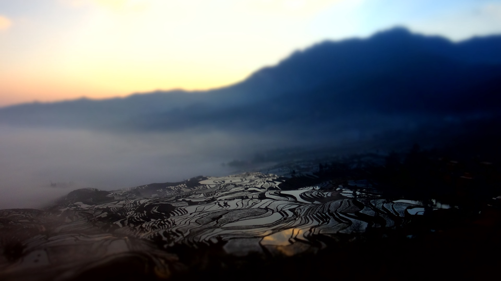
目的地 · 云南全境
版图是身份，不是路线
16 片土地，16 种日子。
触摸山河
每一处，都住得进日子
按区域分组，各自生长。气候、穿衣，先看清楚，再慢慢选。
滇西北
Northwest Yunnan · 雪山 · 古城 · 高原牧场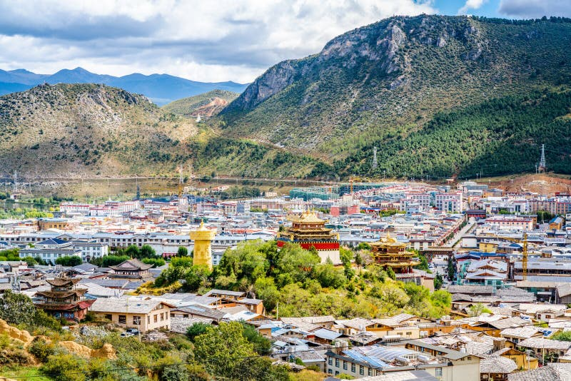
香格里拉的静谧高处
年均 6.3 ℃ · 最热 13.9 ℃ · 最冷 -2.3 ℃
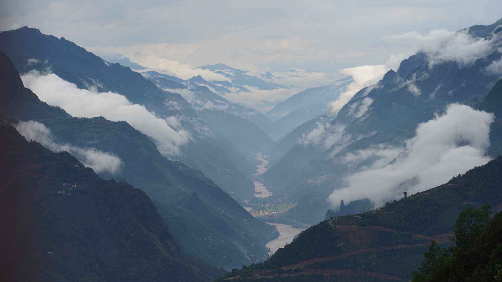
三江并流的峡谷人家
年均 21 ℃ · 最热 26 ℃ · 最冷 15 ℃
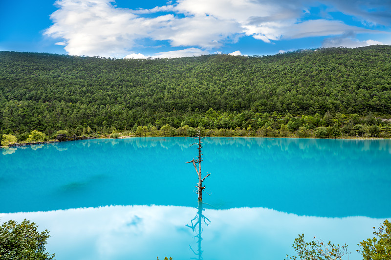
古城与雪山的对望
年均 12.9 ℃ · 最热 18.6 ℃ · 最冷 6.0 ℃
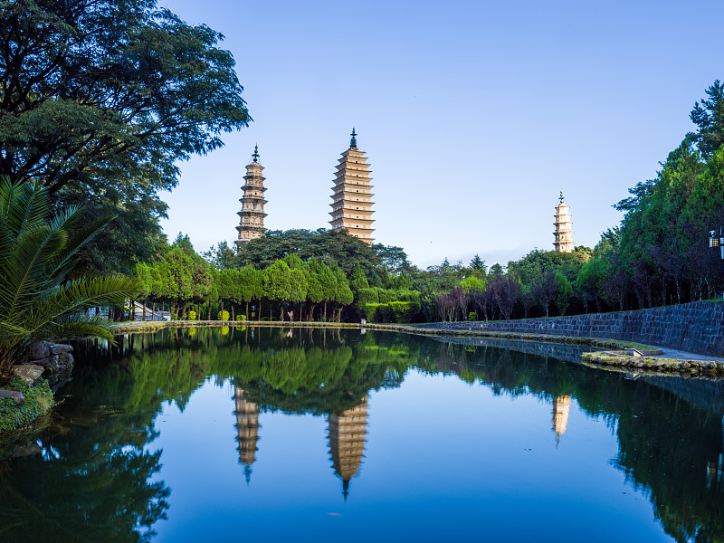
苍山洱海之间
年均 15.1 ℃ · 最热 20.1 ℃ · 最冷 8.7 ℃
滇西
West Yunnan · 温泉 · 古镇 · 傣乡腾冲的温泉与古镇
年均 15.9 ℃ · 最热 21.3 ℃ · 最冷 8.5 ℃
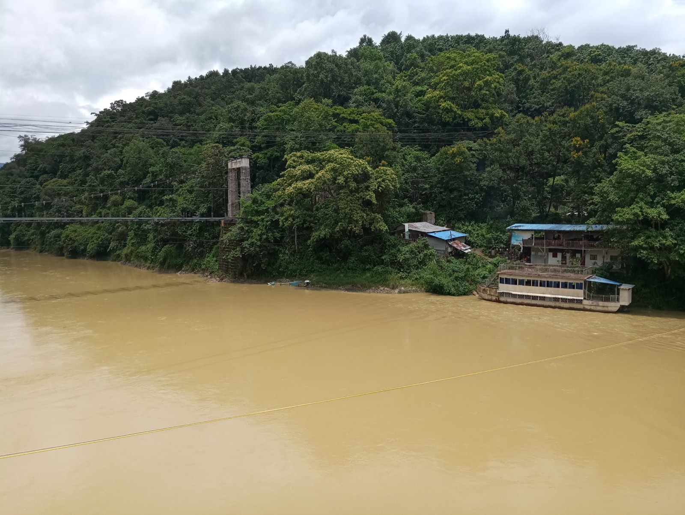
边境线上的傣乡
年均 19.6 ℃ · 最热 24.0 ℃ · 最冷 12.2 ℃
滇西南
Southwest Yunnan · 茶山 · 雨林 · 佤山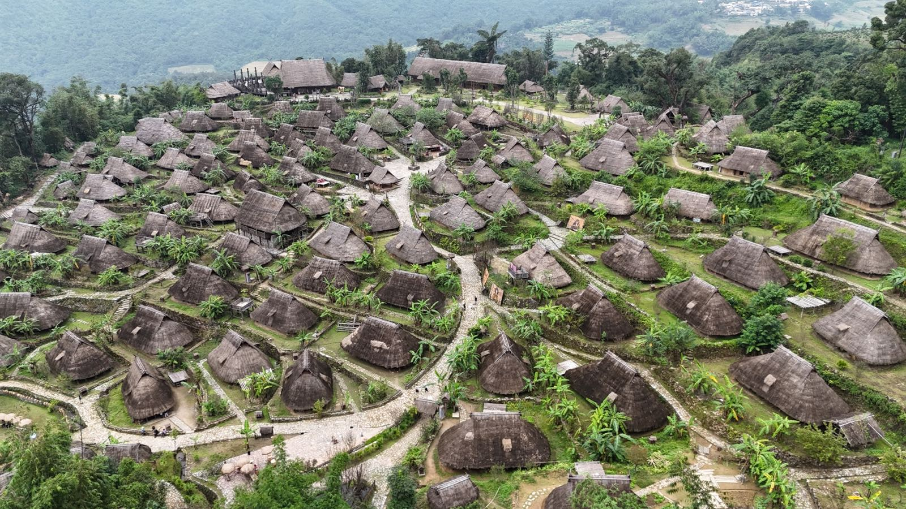
佤乡与茶山
年均 17.3 ℃ · 最热 21.6 ℃ · 最冷 11.2 ℃
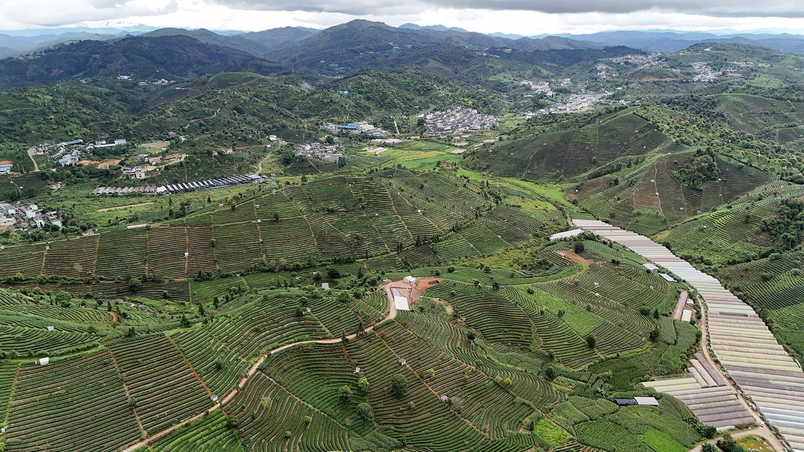
茶山雾里的栖居
年均 19.3 ℃ · 最热 23.0 ℃ · 最冷 13.7 ℃
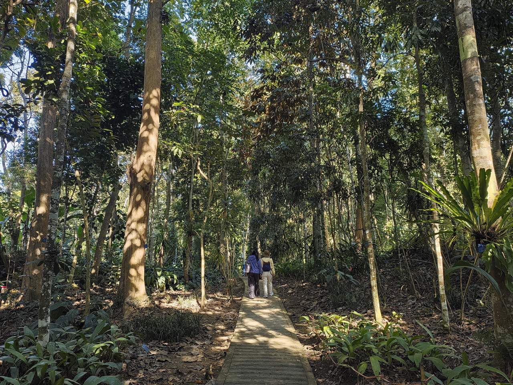
北回归线的雨林
年均 21.8 ℃ · 最热 26.1 ℃ · 最冷 16.5 ℃
滇中
Central Yunnan · 春城四季 · 高原慢生活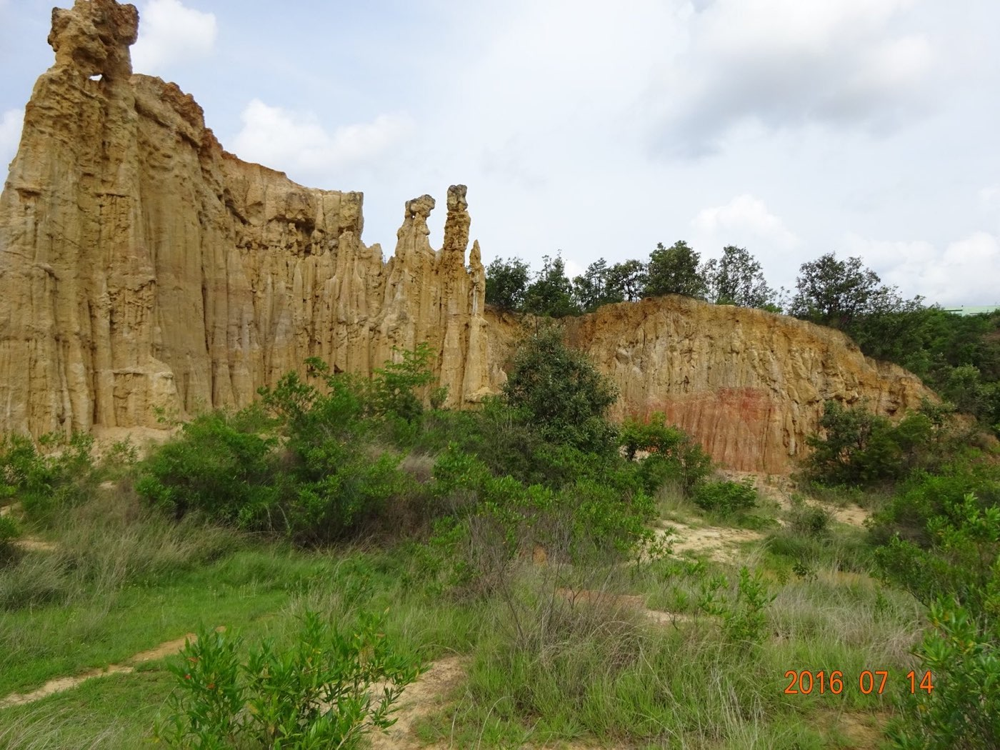
彝州的山川旧事
年均 15.6 ℃ · 最热 20.9 ℃ · 最冷 8.2 ℃
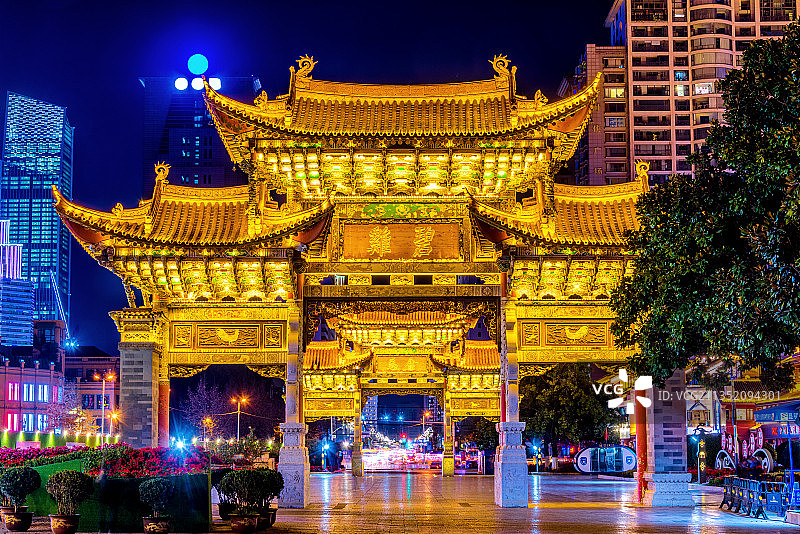
春城的晨昏
年均 15.9 ℃ · 最热 20.7 ℃ · 最冷 9.3 ℃
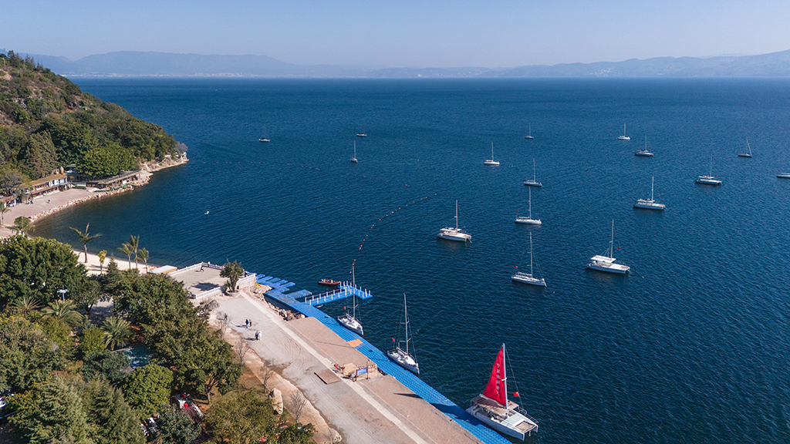
高原湖群的光
年均 16.0 ℃ · 最热 20.8 ℃ · 最冷 8.5 ℃
滇东北
Northeast Yunnan · 乌蒙山 · 峡谷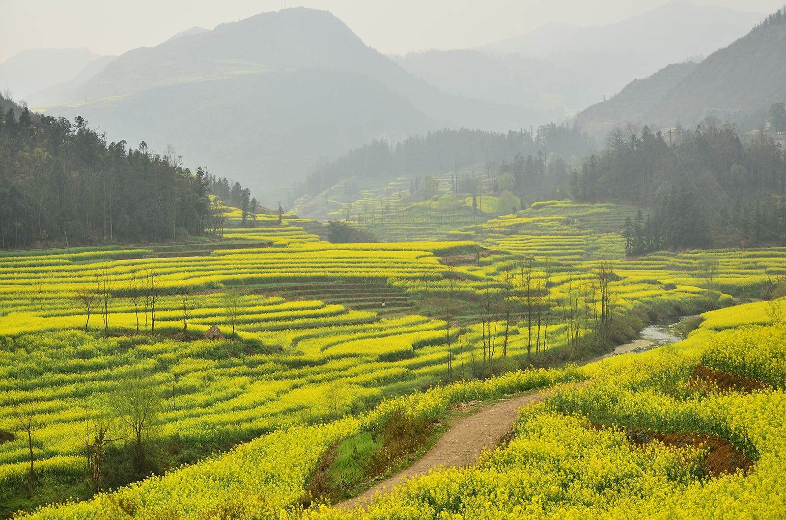
珠江源头的辽阔
年均 15.9 ℃ · 最热 19.9 ℃ · 最冷 7.1 ℃
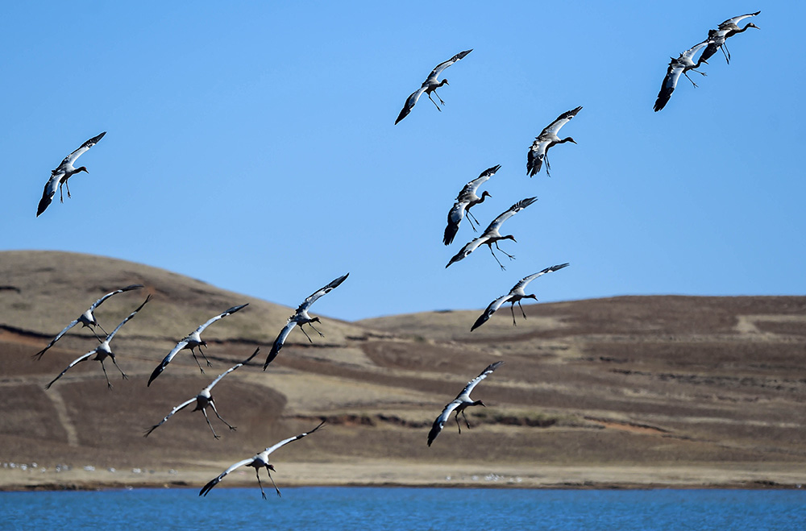
乌蒙山的云上人家
年均 11.7 ℃ · 最热 19.8 ℃ · 最冷 2 ℃